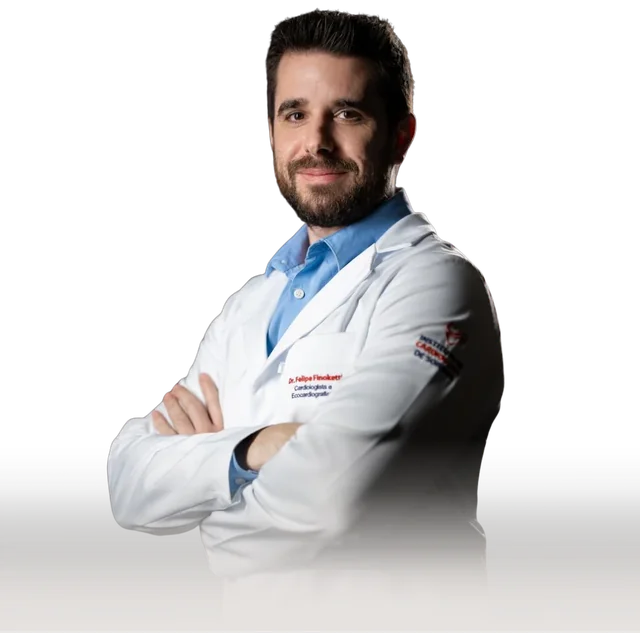
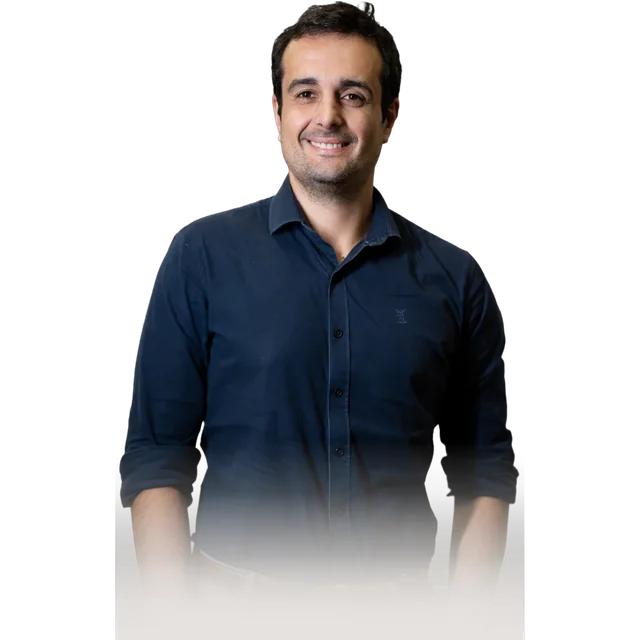

Instituto de Cardiologia de Sorriso
O seu coração está sendo cuidado por alguém que realmente entende dele?
No ICS, o médico que vai te atender domina exatamente a área do seu caso. E se o seu quadro precisar de mais de um olhar, o Heart Team está na mesma equipe — sem encaminhamentos para outra cidade, sem recomeçar do zero.
- Heart Team Completo
- 7 Cardiologistas Especializados
- Medicina Baseada em Evidências
- Sorriso – MT
Para quem é esta consulta
Três perfis de paciente, um time preparado para todos.
O ICS atende desde quem quer um check-up preventivo até quem convive com uma condição cardíaca estabelecida — passando por quem precisa de avaliação para uma finalidade específica, como uma cirurgia ou retorno ao esporte.
Perfil 01 — Quem quer cuidar antes de precisar
Você se sente bem, mas sabe que tem fatores de risco — pressão alta, diabetes, colesterol, histórico familiar, sedentarismo. Ou chegou em uma fase da vida em que faz sentido saber como está o coração. O check-up cardiológico existe para isso: identificar o que ainda não deu sinal.
Sinais: acima de 40 anos sem sintomas · histórico familiar de infarto · hipertensão, diabetes ou colesterol elevado · sedentarismo
Perfil 02 — Quem já tem diagnóstico estabelecido
Você já tem um diagnóstico estabelecido — arritmia, insuficiência cardíaca, doença coronária, valvopatia. Talvez esteja em acompanhamento com um clínico geral, ou há tempos sem rever um cardiologista. Essa consulta é para avaliar onde você está clinicamente e definir com clareza o próximo passo do tratamento.
Sinais: arritmias · insuficiência cardíaca ou sopro · pós-infarto ou pós-procedimento · acompanhamento crônico
Perfil 03 — Quem precisa de avaliação para um objetivo específico
Você vai fazer uma cirurgia e o anestesista pediu uma avaliação cardiológica, começou a treinar mais sério e quer saber se o coração aguenta, ou voltou a praticar esporte depois de um tempo parado. Essas avaliações têm protocolos próprios, e fazem toda a diferença na segurança do que vem a seguir.
Sinais: avaliação pré-operatória · liberação para atividade física intensa · atletas e esporte competitivo · retorno ao exercício pós-evento cardíaco
Passo a passo
O que acontece na sua consulta
A consulta no ICS começa com escuta — o histórico completo, os sintomas, os medicamentos, o contexto de vida. O médico precisa conhecer o paciente antes de avaliar o coração. A partir daí, cada etapa tem um objetivo claro: o exame físico, que faz sentido para aquele caso, e o plano clínico explicado com clareza antes de você sair da sala.
Escuta do histórico completo
Sintomas, histórico familiar, condições pré-existentes, medicamentos em uso, estilo de vida. O médico precisa conhecer você antes de avaliar o seu coração.
Avaliação clínica detalhada
Exame físico completo, medição de pressão, ausculta cardíaca. É aqui que o médico começa a cruzar o que você descreveu com o que ele está observando.
Investigação diagnóstica quando necessário
Se o caso exige exames complementares, o médico indica os que fazem sentido para aquela situação clínica, e explica para que serve cada um antes de solicitá-los.
Plano clínico explicado com clareza
Você sai da consulta sabendo o que está acontecendo, o que precisa ser feito e qual o próximo passo. Com perguntas respondidas, sem pressão e com o médico disponível para o que surgir depois.
Cobertura completa
Cada área da cardiologia representada por um especialista.
O ICS reúne as principais subespecialidades da cardiologia moderna — mais as especialidades integradas que completam o cuidado cardiovascular. Qualquer que seja a necessidade clínica, há um médico preparado para ela dentro do mesmo time.
Especialidades cardiológicas
Especialidades integradas
O modelo que muda o cuidado
Por que se consultar aqui faz diferença?
O que diferencia o ICS é o modelo de trabalho. Quando um cardiologista tem ao lado um eletrofisiologista, um especialista em imagem e um cirurgião cardiovascular no mesmo time, a qualidade da decisão clínica muda. O paciente deixa de depender de um único olhar e passa a ter o benefício de uma avaliação integrada, desde a primeira consulta.
Decisões tomadas em equipe
Casos complexos são discutidos pelo Heart Team antes de qualquer conduta. O paciente tem o benefício de vários olhares — eletrofisiologia, imagem, hemodinâmica e cirurgia conversando entre si.
Continuidade real do cuidado
O médico que te avalia na consulta é o mesmo que acompanha seus exames, participa da discussão clínica e está presente se o caso evoluir para um procedimento.
Alta complexidade acessível na região
Do ecocardiograma avançado ao cateterismo, passando pela ablação de arritmias e cirurgia cardiovascular — tudo dentro da mesma rede, sem precisar viajar.
Medicina baseada em evidências
Corpo clínico presente nos principais congressos internacionais de cardiologia — ACC, AHA e ESC. O que há de mais atualizado aplicado em Sorriso.
Heart Team
Formados nos melhores centros e trabalhando juntos por você.
Cada médico do ICS domina uma área específica da cardiologia. E por estarem no mesmo time, o que cada um sabe beneficia todos os pacientes da equipe.

Tomografia e Ressonância Cardíaca

Arritmias e Eletrofisiologia

Ecocardiografia

Cardiologia Intervencionista
Eletrofisiologia e Cardiologia do Esporte
Cirurgia Cardiovascular

Cardiologia
O que os números mostram
O coração avisa quando já é tarde demais
Noventa por cento dos pacientes que sofreram um infarto tinham pelo menos um fator de risco identificável antes do evento. O problema é que a maioria desses fatores não dói, não incomoda, não aparece no espelho. A hipertensão é silenciosa. O colesterol alto não tem sintoma. O risco cardiovascular elevado só aparece quando algo acontece, e o objetivo do check-up é agir antes disso.
Fontes: Ministério da Saúde / DataSUS; Sociedade Brasileira de Cardiologia; ANVISA; REASE 2024; Cochrane Reviews; ACC/AHA Guidelines; OMS / World Heart Federation.
Agendamento
Como agendar a sua consulta
Agendar uma consulta no ICS é direto: uma mensagem pelo WhatsApp, a equipe te responde e você escolhe o horário. Sem formulário online, sem central de atendimento automática, sem espera indefinida.
Mande uma mensagem pelo WhatsApp
Diga que quer agendar e, se quiser, informe brevemente o motivo — check-up, sintoma específico ou área de interesse.
Nossa equipe entrará em contato
Em até 1 hora em horário comercial, a equipe retorna para entender o motivo da consulta e direcionar para o médico mais adequado à sua necessidade clínica.
Você escolhe o melhor horário
A equipe apresenta as opções disponíveis e confirma o agendamento.
WhatsApp: (66) 99910-6353 · Seg–Sex 07:30–17:30 · Sáb 07:30–11:30
Rua das Orquídeas, 825 — Alphaville, Sorriso–MT
Você chegou até aqui por um motivo
O seu coração merece uma avaliação à altura do que está em jogo.
Uma consulta onde o médico conhece o seu histórico, avalia com cuidado e te diz com clareza o que está acontecendo e o que fazer. Isso é o que o ICS oferece, com o Heart Team mais completo do norte do Mato Grosso, em Sorriso.
Agendar minha consulta